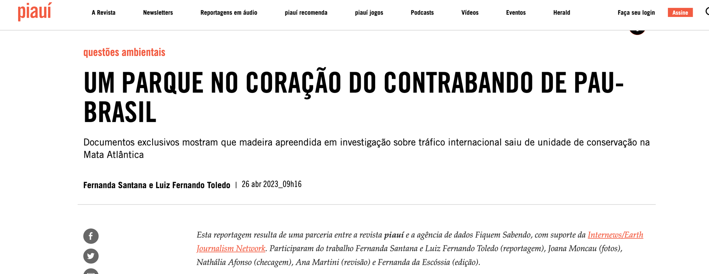

Como conseguir dinheiro para o seu projeto jornalístico
Sobre o que vamos falar hoje
- Como se vender melhor? Como contar uma boa história sobre você e seu projeto?
- A busca por projetos duradouros
- Bolsas de reportagem, de estudo e fellowships
- Principais fundações e organizações que apoiam o jornalismo
- Como montar uma aplicação matadora
A narrativa pessoal
Antes de vender um projeto, venda a sua história
Ela é uma história que criamos sobre nós mesmos e depois acreditamos nela.
Conhecer essa história e dar significados a ela pode ser o primeiro passo para convencer os outros da importância de tal história. E convencê-los a nos dar oportunidades. Recursos. Tempo.
Não existe trajetória ruim ou pior. Mas existem jeitos e jeitos de falar sobre essa trajetória.
A narrativa pessoal que começa a se formar
- Democratização do jornalismo
- Maior acesso a fontes
- Jornalismo mais plural
- Para os chefes: garantir reportagens exclusivas
Fellowships
Bolsas para executar projetos ou estudar um tema
O que são fellowships?
- Na prática, é ganhar uma bolsa para executar um projeto ou estudar um tema (ou ambos)
- Oportunidade de passar um tempo dedicado; mais oportunidades no exterior, mas cada vez mais surgem bolsas remotas ou de organizações brasileiras
- É uma espécie de prêmio: demonstre experiência e que seu projeto terá impacto
- Você é seu próprio chefe no período da bolsa
- Oportunidades em áreas correlatas (direitos humanos, economia, meio ambiente)
- Pode conter mentoria com especialistas
Programas disponíveis para jornalistas
Professional Fellows Program
Programa de intercâmbio para líderes emergentes de mídia.
Saiba mais →Rainforest Investigations Network
Salário integral por 1 ano para investigações na Amazônia.
Saiba mais →Bolsas para jornalistas da América Latina
Lista consolidada de oportunidades abertas, atualizada periodicamente.
Ver lista →Fellowship em Justiça Climática
Exclusivo para jornalistas negros e negras. Formação + cobertura investigativa.
Saiba mais →Como aplicar a um fellowship?
- Apresente um projeto de reportagem de longo prazo ou de pesquisa
- Períodos mais longos que uma bolsa de reportagem (pode ser até um ano)
- Processos demoram — se planeje e não deixe pro último dia!
- Como meu projeto será útil para a comunidade em que convivo?
- Por que eu sou a pessoa certa, no lugar certo, pra aplicar esse projeto?
- Procure ativamente, pense em projetos com antecedência e aplique quantas vezes for necessário
Não precisa sair do Brasil
Oxford Climate Journalism Network
Programa sobre mudanças climáticas. Remoto com encontros presenciais.
Saiba mais →The Lede Program
Programa remoto de jornalismo de dados da Columbia University.
Saiba mais →ICFJ/Connectas Fellowship
US$ 1.000-3.000 para investigações na América Latina. Fluxo contínuo.
Saiba mais →Rosalynn Carter Journalism Fellowship
Foco em saúde mental. Aberto a jornalistas internacionais.
Saiba mais →Fellowships para ficar de olho
Rainforest Investigations Network
Salário integral por 1 ano para investigações na Amazônia, Congo e Sudeste Asiático. Aceita candidaturas em português.
Aplicar →Journalist Fellowship Programme
3 a 6 meses em Oxford. Turmas de outubro/2026, janeiro e abril/2027. Mínimo 5 anos de experiência.
Aplicar →McGraw Fellowship for Business Journalism
Até US$ 15.000 + suporte editorial para reportagens investigativas com ângulo econômico ou financeiro.
Aplicar →Nieman Fellowship
1 ano em Harvard. Um dos mais prestigiados do mundo. Turma 2027-28.
Saiba mais →Brasileiros em fellowships internacionais
- Sérgio Spagnuolo (Núcleo Jornalismo, SP) — JSK/Stanford 2025-26. Diretor executivo do Núcleo
- Natalia Viana (Agência Pública) — Nieman/Harvard 2022. Cofundadora da Pública, Pandora Papers, presidente da Ajor
- Adriano Belisário (Agência Pública) — Instituto Ling 2020, US$ 75.000
- Ana Luiza Albuquerque (Folha de S.Paulo) — Instituto Ling 2020, US$ 65.000
Bolsas de estudo
Mestrados, doutorados, especializações
O mundo das bolsas de estudo
- Oportunidade para se especializar em um tema ou técnica de trabalho
- Mestrados, doutorados, especializações (fique de olho em vagas pra aluno especial!)
- Sair da zona de conforto
- Expandir possibilidades de como fazer jornalismo
- Recursos garantidos por algum período
- Bom para transição de carreira
- Networking
Algumas opções de bolsas de estudo
FGV EAESP — Mestrado em Administração Pública
CMAPG. Ótima opção para quem quer entender políticas públicas por dentro.
Saiba mais →University of Maryland — Jornalismo de Dados
Bolsas para curso de jornalismo de dados com encontros virtuais e rede internacional.
Saiba mais →Chevening
Bolsa integral do governo britânico para mestrado no Reino Unido. Altamente competitiva.
Saiba mais →Fundação Estudar
Bolsas parciais e integrais para graduação e pós no Brasil e exterior.
Saiba mais →Instituto Ling — Jornalista de Visão
Principal programa independente de bolsas para jornalistas brasileiros estudarem no exterior. Bolsas de até US$ 75.000 para mestrado em universidades de ponta.
- Atenção: funciona por indicação — não aceita candidatura direta. Cultive relações com indicadores.
- Bolsistas 2025: Daniela Arcanjo (Folha), João Pedro Soares (DW), Laura Scofield (Pública), Renato Vasconcelos (O Globo), Weslley Galzo (Estadão)
- Bolsistas 2024: Artur Búrigo (Folha), Cícero Cotrim (Broadcast), Daniela Flor (Estadão), Emanuelle Bordallo (O Globo), Juliana Causin (O Globo)
Como aplicar?
- Construa a sua narrativa — isso não sai da noite pro dia e requer tempo e reflexão
- Tenha bons exemplos de trabalhos feitos e como eles se encaixam nessa narrativa
- Para onde essa história pessoal pode te levar?
- Por que você quer aplicar para esta bolsa? O que essa organização tem de diferente?
- Quais professores ou aulas te interessam?
- Que contatos você já teve com essa instituição na vida?
- Pode haver provas de conhecimento (mas não são tão difíceis quanto parece)
Bolsas de reportagem e grants
Combustível para tirar ideias do ar
As bolsas de reportagem
- Tirar ideias do ar que um frila comum não pagaria
- Combustível, hotel, fotografia, vídeo...
- Enriquecimento de currículo + prêmios
- Aproximação da organização que pagou as bolsas
- Já combinar com um editor onde o projeto será publicado, pois possivelmente será cobrado
Organizações que financiam pautas
Reporting Fellowships
Bolsas para reportagens sobre meio ambiente, biodiversidade e clima.
Ver chamadas →Edital de Jornalismo de Educação
R$ 10.000 por reportagem sobre educação pública brasileira.
Ver edital →Becas de Periodismo
Bolsas da fundação criada por Gabriel García Márquez.
Ver bolsas →Microbolsa
R$ 2.000/mês por 4 meses. Recorte racial e de gênero.
Ver edital →Conservation Reporting Fellowship
Bolsas para reportagens sobre conservação e biodiversidade.
Ver chamada →Editais de reportagem
Editais periódicos de financiamento a reportagens ambientais e investigativas.
Acompanhar →Grants de reportagem para aplicar agora
Fund for Investigative Journalism
Até US$ 10.000 para reportagens investigativas. Também tem grants-semente de US$ 2.500 para pré-apuração.
Aplicar →Global Reporting Grants
US$ 5.000-10.000 para reportagens internacionais. Aceita propostas em português. Sem prazo fixo.
Aplicar →Edital de Jornalismo de Educação
R$ 10.000 por reportagem sobre educação pública brasileira. 8 bolsas por edição.
Acompanhar →Earth Journalism Network
Bolsas para reportagens sobre biodiversidade, clima e conservação. Múltiplas chamadas ao longo do ano.
Ver chamadas →Grants de médio e longo prazo
Programa de Jornalismo e Mídia
Financiamento para projetos de jornalismo científico. R$ 1,35 mi investidos no ciclo 2023-2026. Agência Pública e Repórter Brasil já foram beneficiadas.
Saiba mais →Envie seu projeto
Apoio a projetos de equidade racial, sistemas alimentares e dados gerais. Fluxo contínuo de recebimento.
Enviar projeto →Como montar sua aplicação
Carta, currículo, pitch — o que funciona de verdade
História mínima e história máxima
- O que a pré-apuração já tem? A história se sustenta só com isso?
- Quais outras hipóteses você tem? Como chegar até elas?
- Quem poderá ser ouvido?
- O que já saiu sobre esse assunto? O que ainda é inédito?
- Onde será publicado?
- Leia o edital com calma e veja como se encaixar de forma específica. Não aplique igual pra todos os lugares!
Carta de recomendação / referências
- Só quem te conhece de fato. Nada de famosinhos
- Só ex-chefes que de fato trabalharam com você (colega pode, se tiver algo excepcional a dizer — mas nunca apenas pela amizade. A carta é você sendo vendido pelo olhar de outro)
- As pessoas gostam de te mostrar a carta antes de enviar
- Já chegue com uma história contada sobre vocês: lembre a pessoa de um projeto incrível e peça pra ela focar naquilo
- Nunca invente ou aumente; o mundo é pequeno!
- Por que você? Por que agora?
Trecho de carta de recomendação
A Associação Brasileira de Jornalismo Investigativo (Abraji) é uma organização que atua em defesa do jornalismo e dos jornalistas há 20 anos. Somos responsáveis por um dos maiores congressos do setor na América Latina, com cerca de 9 mil participantes na última edição (...)
Desde 2020 reforçamos esse trabalho com a entrada do jornalista Luiz Fernando Toledo em nosso quadro de diretores (...) Toledo é hoje um dos principais especialistas no acesso à informação pública entre jornalistas no Brasil.
O estudo por ele coordenado mostrou que há pouco conhecimento e uso da LAI. Com os resultados, Toledo criou um curso que já foi assistido por mais de 1 mil jornalistas e está sendo aplicado em dez redações brasileiras.
A Abraji apoia fortemente a iniciativa proposta por Toledo de cobrir a transparência pública como um tema de interesse social (...)
Perguntas a responder na carta de apresentação
- Quem é você?
- Qual sua área de interesse?
- Qual seu diferencial?
- Que história de vida ou profissional exemplifica esses 3 primeiros pontos?
- Qual foi o impacto do seu trabalho até agora?
- Que oportunidades você já teve — e como se beneficiou delas e as devolveu para a sociedade?
- Como essas experiências serão úteis nesse novo projeto?
- Por que aqui? O que te interessa mais nessa organização?
Currículo que funciona
- Não coloque só o nome dos cargos — diga, em uma frase, algo incrível que você fez lá
- Destacar o que interessa mais àquele projeto/bolsa/curso
- Uma página! Mais do que isso ninguém lê
- Prêmios só quando ligados a uma história que você consiga contar
Não liste cargos — conte o que fez de melhor
Uma das organizações jornalísticas mais relevantes da América Latina. Eu fui responsável por levantamentos, estudos, oficinas e projetos relacionados à Lei de Acesso à Informação. Um desses projetos treinou mais de 200 jornalistas em mais de 15 redações e instituições de ensino brasileiras.
Coordenei projetos jornalísticos, incluindo um projeto de um ano sobre gastos do cartão corporativo da Presidência que levou a investigações contra presidentes brasileiros, passados e atuais, e foi mencionado em mais de 1.000 reportagens.
Todos os trabalhos precisam ser colocados? Não necessariamente.
Exemplo prático completo
Bolsa de reportagem EJN · US$ 5.000 · Pau-brasil
Seu projeto é o melhor projeto. Você só precisa convencer os jurados disso.
- O que eles buscam? Veja palavras-chave, temas, projetos bem sucedidos do passado
- Defina de forma muito clara onde quer chegar e de onde está partindo
- Pense em entregáveis: audiência, impacto social, formação, multiplicação
- Faça uma ótima pesquisa de custos — não saber quanto custa a passagem pode demonstrar falta de preparo

Pau-brasil: a árvore ameaçada que vira arco de violino
O OCCRP e a piauí revelaram fabricantes investigados por contrabandear arcos ilegais para os EUA, Europa e Japão. Agora vamos descobrir de onde vem a madeira, as conexões entre contrabandistas e fabricantes, e como conseguem exportar.
A segunda parte investiga as iniciativas para que o pau-brasil sobreviva e se torne sustentável.
Quem será ouvido
- Fontes do Ibama oficiais na operação Do-Re-Mi (orientação, sem citação na história)
- Fontes da Polícia Federal envolvidas na operação (enviarão documentos, sem menção na gravação)
- Especialistas em unidades de conservação da UFBA
- Especialistas na conservação do pau-brasil da UFRJ
- Especialistas do Incaper (Espírito Santo)
De onde vêm os dados
- Conjunto de dados de multas ambientais do Ibama (dados abertos em dadosabertos.ibama.gov.br)
- Solicitações via LAI ao Ibama, ICMBio, Polícia Federal
- Solicitações via LAI ao Espírito Santo e governos estaduais da Bahia (Polícia Civil, órgãos ambientais locais)
Passo a passo da investigação
- Fontes do Ibama indicam quem extrai pau-brasil no sul da Bahia → enviar LAIs para obter sanções
- Obter relatórios policiais comprovando, por análise laboratorial, que a madeira apreendida saiu do Parque Nacional do Pau Brasil
- Enviar freelancer ao sul da Bahia para visitar o Parque Nacional
- Se houver avanço no ângulo internacional, entrevistar pessoas em Londres/UK que compram pau-brasil bruto e arcos
O que será entregue
- Dois artigos de 1.500 palavras — um sobre contrabandistas, outro sobre conservação
- Publicação na revista piauí (português) e, se houver ângulo internacional, no OCCRP (inglês)
- Coleções no DocumentCloud e Google Pinpoint com todos os PDFs para outros repórteres usarem
- Limitação: a piauí pode optar por publicar apenas uma matéria em vez de duas
Quem vai participar
- Luiz Fernando Toledo — repórter e coordenador
- Fernanda da Escóssia — editora da revista piauí
- Fernanda Santana — freelancer / repórter na Bahia
- Joana Moncau — freelancer / fotos
Cronograma do projeto
- Janeiro 2023 — Encontrar freelancers; enviar solicitações via LAI
- Fevereiro 2023 — Viajar, escrever, verificar fatos
- Março 2023 — Publicar a primeira história sobre extração e conexão com fabricantes de arcos
- Abril 2023 — Publicar segunda matéria sobre preservação + enviar dados e documentos em newsletter
Impacto e grants de longo prazo
Como se mede o impacto de um projeto?
- Número de citações
- Número de visualizações e tempo de leitura
- Impacto no local: mudou alguma realidade? Conscientizou pessoas?
- Formação de pessoas: mais gente ficou capacitada?
- Mudanças em políticas públicas; reconhecimento público de erros ou problemas
Para projetos maiores e mais ambiciosos
Programa de Jornalismo e Mídia
R$ 1,35 mi investidos no ciclo 2023-2026. Agência Pública e Repórter Brasil já foram beneficiadas.
Ver projetos apoiados →Envie seu projeto
Equidade racial, sistemas alimentares e dados. Fluxo contínuo.
Enviar projeto →Dicas finais
O que mais pode fazer diferença na sua jornada
Falar um segundo idioma ajuda MUITO
- Nossa moeda está desvalorizada — uma bolsa mediana dos EUA pode bancar um ou mais anos de trabalho remoto
- Financiadores gringos incomodam bem menos ao longo do percurso
- Pode ajudar a criar contatos no exterior e até conseguir oportunidades fora
- Facilita o acesso a novas fontes e estudos
- Não se desespere: pode ser um plano para médio ou longo prazo
Uma bolsa leva a outras
- Saber que alguém executou um projeto até o fim, sem dar dor de cabeça, é um grande trunfo
- A bolsa é uma oportunidade, não um direito constitucional — agarre e use da melhor forma!
- Quem dá bolsas é praticamente um investidor. Mostre o bom retorno que terão!
IA como aliada na aplicação
- Treinar para entrevistas
- Pedir para editar e melhorar o pitch
- Ser crítico com suas ideias e brigar com elas até achar o formato ideal
- Analisar sites e editais em busca de palavras-chave
- Analisar projetos vencedores de outros anos
- CUIDADO: Não vá colar um "claro, aqui está o que você pediu" no seu projeto!
Prompts de IA para a sua aplicação
- "Leia este edital: [LINK] e me ajude a construir um projeto que contenha todos os elementos exigidos. Eu estou pensando em aplicar com um projeto sobre xxxx."
- "Avalie esta minha ideia como avaliador de uma bolsa para trabalhar com [COMPLETE]. Seja crítico e antecipe quais pontos podem ser questionados ou considerados fracos."
- "Quero um relatório com tudo que já foi publicado nos últimos cinco anos sobre o assunto XXXX. Quero fazer um projeto sobre isso, para oferecer à organização XXXX."
- "Essas pessoas receberam bolsa da fundação X e publicaram estas coisas: [LINKS]. Considerando os valores dessa organização e o histórico dessa pessoa, por que você acha que ela ganhou esse edital? O que eu posso aprender com esse caso que seja útil para a minha aplicação?"
23/04, 19h — Como conseguir bons personagens, falar com contraventores e pegar boas aspas
A última aula do curso. Vamos falar sobre a parte mais humana da apuração.